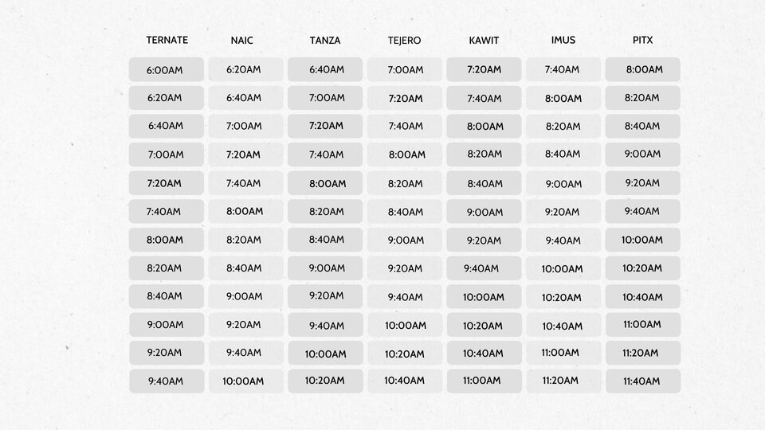
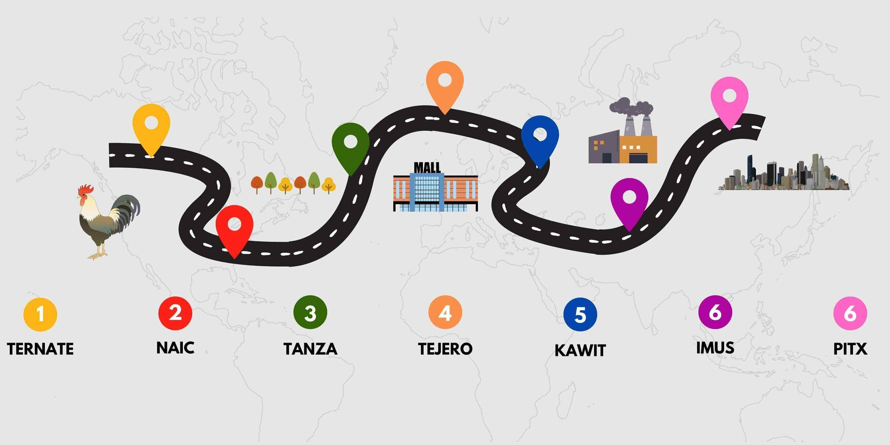

Bus schedule
Map
Bus Fare
Please take note that the fare will vary depending on the age of the passenger. Check the information below for bus fare.
- 65 years old and above: $1.00
- Adults (ages 18 - 64): $2.25
- Youth (ages 12-17): $1.25
- Children (ages 5 - 12) $1.00
Inquiry for Rent
Stan Liner is open to companies who are looking for buses for their trips. The pricing of the bus rental will depend on the location and the number of buses that will be rented. If you would like to inquire, please contact us through our email or phone number.
Contact information
Phone number: 1(909)-593-1379
Email address: busrental@stanliner.com